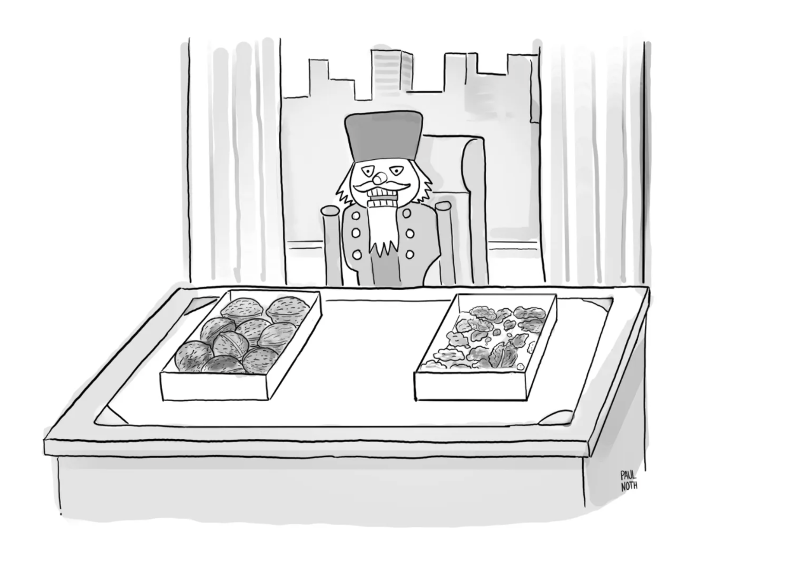

Machine Learning in Python
Applied Machine Learning
Calvin
Agenda
- Python Overview
- Review of Regression
- Classification
- Basic Feature Engineering
Quarto
- I switch from a R backend to a Python backend.
- I add the following below my title in my .qmd header:
jupyter: python3Pip
- In Python, we can typically install packages via
pip - It is much typical to use
pipat commandline.
- Here is a “clean” way to do so from within the Python
Packages
- I’ll build a list of packages at install them via a loop.
- I use
_ =to discard the result of the installation process.- Stores cell result in a variable.
- I ignore the variable.
Import
- Python packages use
importrather thanlibrary()
- Typically use the module name as a function’s prefix.
- This resolves name collisions, like
dplyrandstats
- This resolves name collisions, like
Setup
- We will work with a
winedataset that is enormous.
url = "https://cd-public.github.io/courses/rmls25/dat/"
rds = "wine.rds" # or "w_1k.rds"
pyreadr.download_file(url + rds, rds)
wine = pyreadr.read_r(rds)[None]
wine| id | country | description | designation | points | price | province | region_1 | region_2 | taster_name | taster_twitter_handle | title | variety | winery | year | |
|---|---|---|---|---|---|---|---|---|---|---|---|---|---|---|---|
| 0 | 1.0 | Portugal | This is ripe and fruity, a wine that is smooth... | Avidagos | 87.0 | 15.0 | Douro | NaN | NaN | Roger Voss | @vossroger | Quinta dos Avidagos 2011 Avidagos Red (Douro) | Portuguese Red | Quinta dos Avidagos | 2011.0 |
| 1 | 2.0 | US | Tart and snappy, the flavors of lime flesh and... | NaN | 87.0 | 14.0 | Oregon | Willamette Valley | Willamette Valley | Paul Gregutt | @paulgwine | Rainstorm 2013 Pinot Gris (Willamette Valley) | Pinot Gris | Rainstorm | 2013.0 |
| 2 | 3.0 | US | Pineapple rind, lemon pith and orange blossom ... | Reserve Late Harvest | 87.0 | 13.0 | Michigan | Lake Michigan Shore | NaN | Alexander Peartree | NaN | St. Julian 2013 Reserve Late Harvest Riesling ... | Riesling | St. Julian | 2013.0 |
| 3 | 4.0 | US | Much like the regular bottling from 2012, this... | Vintner's Reserve Wild Child Block | 87.0 | 65.0 | Oregon | Willamette Valley | Willamette Valley | Paul Gregutt | @paulgwine | Sweet Cheeks 2012 Vintner's Reserve Wild Child... | Pinot Noir | Sweet Cheeks | 2012.0 |
| 4 | 5.0 | Spain | Blackberry and raspberry aromas show a typical... | Ars In Vitro | 87.0 | 15.0 | Northern Spain | Navarra | NaN | Michael Schachner | @wineschach | Tandem 2011 Ars In Vitro Tempranillo-Merlot (N... | Tempranillo-Merlot | Tandem | 2011.0 |
| ... | ... | ... | ... | ... | ... | ... | ... | ... | ... | ... | ... | ... | ... | ... | ... |
| 89551 | 129966.0 | Germany | Notes of honeysuckle and cantaloupe sweeten th... | Brauneberger Juffer-Sonnenuhr Spätlese | 90.0 | 28.0 | Mosel | NaN | NaN | Anna Lee C. Iijima | NaN | Dr. H. Thanisch (Erben Müller-Burggraef) 2013 ... | Riesling | Dr. H. Thanisch (Erben Müller-Burggraef) | 2013.0 |
| 89552 | 129967.0 | US | Citation is given as much as a decade of bottl... | NaN | 90.0 | 75.0 | Oregon | Oregon | Oregon Other | Paul Gregutt | @paulgwine | Citation 2004 Pinot Noir (Oregon) | Pinot Noir | Citation | 2004.0 |
| 89553 | 129968.0 | France | Well-drained gravel soil gives this wine its c... | Kritt | 90.0 | 30.0 | Alsace | Alsace | NaN | Roger Voss | @vossroger | Domaine Gresser 2013 Kritt Gewurztraminer (Als... | Gewürztraminer | Domaine Gresser | 2013.0 |
| 89554 | 129969.0 | France | A dry style of Pinot Gris, this is crisp with ... | NaN | 90.0 | 32.0 | Alsace | Alsace | NaN | Roger Voss | @vossroger | Domaine Marcel Deiss 2012 Pinot Gris (Alsace) | Pinot Gris | Domaine Marcel Deiss | 2012.0 |
| 89555 | 129970.0 | France | Big, rich and off-dry, this is powered by inte... | Lieu-dit Harth Cuvée Caroline | 90.0 | 21.0 | Alsace | Alsace | NaN | Roger Voss | @vossroger | Domaine Schoffit 2012 Lieu-dit Harth Cuvée Car... | Gewürztraminer | Domaine Schoffit | 2012.0 |
89556 rows × 15 columns
Review of Regression
Single Variable
- Pick the poshest province.
Regress
- Take a quick regression model over the wine.
Let’s draw it
Multiple regression
Let’s draw it
How about with an interaction?
Let’s draw it
Model diagnostics
Moving to an ML framework
Split sample using Caret
Compare RMSE across models
- Retrain on models on the training set
ms <- list(
lm(price ~ points, data = train),
lm(price ~ points + bordeaux, data = train),
lm(price ~ points * bordeaux, data = train)
)- Test them all under the same conditions.
Group Exercise (30m)
- Load the wine data set
- Visualize the relationship of points and price
- Bonus: Color the observations based on whether the wine is from Bordeaux
- Bonus+: Include regression lines
- Bonus++: Pick a non-Bordeaux category.
Plot
- Points vs. price.
Bonus
- Color the Bordeaux region.
Bonus+
- Include regression lines
Bonus++
- Let’s look at “reserve”.
Bonus
- Anglophones to Francophiles.
RჂservæ
- Cross the Alps.
Dinner break
- On “rჂservæ”
- Ie or Iota (asomtavruli Ⴢ, nuskhuri ⴢ, mkhedruli ჲ, mtavruli Ჲ) is the 15th letter of the three Georgian scripts

Classification and Ethics
The math of it…
- Suppose I’m trying to predict sex based on height.
- Don’t do this in real life (obviously).
- We start by
- defining the outcome and predictors, and…
- creating training and test data.
Partition our Data
data(heights) # from library(dslabs)
y <- heights$sex
x <- heights$height
set.seed(505)
test_index <- createDataPartition(y, times = 1, p = 0.5, list = FALSE)
test_set <- heights[test_index, ]
train_set <- heights[-test_index, ]
summary(heights)Note: this vignette is adapted from this book
Guessing
- Let’s start by developing the simplest possible machine algorithm: guessing the outcome.
Recall:
Accuracy
- The overall accuracy is simply defined as the overall proportion that is predicted correctly:
- What would we have expected the accuracy to be?
- What much would we have expected accuracy to deviate from that expectionation?
Let’s do better…
A simple predictive model
- Idea: Predict
"Male"if observation is within 2 standard deviations
male_mean_less_2sd <- summary[2, ]["mean(height)"] - 2 * summary[2, ]["sd(height)"]
y_hat <- ifelse(x > male_mean_less_2sd, "Male", "Female") %>%
factor(levels = levels(test_set$sex))
c(male_mean_less_2sd, mean(y == y_hat))- The accuracy goes up from ~0.50 to about ~0.80!!
Let’s optimize
cutoff <- seq(61, 70)
get_accuracy <- function(x) {
y_hat <- ifelse(train_set$height > x, "Male", "Female")
mean(y_hat == train_set$sex)
}
accuracy <- map(cutoff, get_accuracy)
unlist(accuracy)- Most are much higher than 0.5!!
Let’s take a gander
- Easier for me to see it.
Optimal Cutoff
- Should we be cutting at an integer?
Apply & Evaluate
Confusion matrix
table(predicted = y_hat, actual = test_set$sex) %>%
as.data.frame() %>%
ggplot(aes(x = predicted, y = actual)) +
geom_tile(aes(fill = Freq), color = "white") +
scale_fill_gradient(low = "white", high = "blue") +
geom_text(aes(label = Freq), vjust = "center", color = "black", size = 24) +
labs(title = "Confusion Matrix", x = "Predicted", y = "Actual")Accuracy by sex
It’s raining men.
Debrief
Moral of the story
Other ethical issues
- Demographic data
- Profit optimizing
- Autonomous cars
- Recommendation engines
- Fair housing
- Criminal sentencing
- Choice of classification model
- Drone warfare
Jameson on Ethics
Reasonable people will disagree over subtle matters of right and wrong… thus, the important part of data ethics is committing to consider the ethical consequences of your choices.
The difference between “regular” ethics and data ethics is that algorithms scale really easily. Thus, seemingly small decisions can have wide-ranging impact.
Calvin on Ethics
No ethical [computation] under capitalism
- Usage of data
|computing is ethicialiffit challenges rather than strengthens existing power relations.
Vocabulary
ML Terms
Definition of ML: using data to find a function that minimizes prediction error.
- Features
- Variables
- Outcome variable
- Regression
- RMSE
- Classification
- Confusion matrix
- Split Samples
Features
- Definition: Individual measurable properties or attributes of data.
- Example: Age, income, and education level in a dataset predicting loan approval.
Variables
- Definition: Data points that can change and impact predictions.
- Example: Independent variables like weather, and dependent variables like crop yield.
Outcome Variable
- Definition: The target or dependent variable the model predicts.
- Example: Predicting “passed” or “failed” for a student’s exam result.
Features vs. Variables
- Features: Inputs to the model, often selected or engineered from raw data.
- Example: “Average monthly income” derived from raw transaction data.
- Example: “Average monthly income” derived from raw transaction data.
- Variables: Broader term encompassing both inputs (independent) and outputs (dependent).
- Example: “House price” (dependent variable) depends on features like size and location.
Regression
- Definition: Statistical method to model the relationship between variables.
- Example: Linear regression predicts house prices based on size and location.
RMSE (Root Mean Square Error)
- Definition: A metric to measure prediction accuracy by averaging squared errors.
- Example: Lower RMSE in predicting drug response indicates a better model fit.
Classification
- Definition: Task of predicting discrete categories or labels.
- Example: Classifying emails as “spam” or “not spam.”
Confusion Matrix
- Definition: A table showing model performance in classification tasks.
- Example: Matrix rows show true values; columns show predicted outcomes.
#| echo: false
table(predicted = y_hat, actual = test_set$sex) %>%
as.data.frame() %>%
ggplot(aes(x = predicted, y = actual)) +
geom_tile(aes(fill = Freq), color = "white") +
scale_fill_gradient(low = "white", high = "blue") +
geom_text(aes(label = Freq), vjust = "center", color = "black", size = 24) +
labs(title = "Confusion Matrix", x = "Predicted", y = "Actual")Split Samples
- Definition: Dividing data into training and testing subsets for validation.
- Example: 80% training, 20% testing ensures unbiased model evaluation.
Bonus Slides:
Precision-recall
Precision-recall tradeoff
- Precision: TP / (TP + FP)
- Recall: TP / (TP + FN)
- Imagine I have a fraud-detection model that gives 1,000 credit card transactions each a risk score.
Precision-recall tradeoff
- Imagine I have a fraud-detection model that gives 1,000 credit card transactions each a risk score.
- The company chooses a risk score cutoff of 77 (for some reason).
- There are 18 transactions with risk above 77. 12 are actually fraud. 20 fraudulent transactions have risk below 77.
- What are precision, recall, and accuracy?
Precision-recall Exercise
- Precision: TP / (TP + FP)
- Recall: TP / (TP + FN)
- 1,000 credit card transactions
- The company chooses a risk score cutoff of 77
- There are 18 transactions with risk above 77.
- 12 are actually fraud.
- 20 fraudulent transactions have risk below 77.
- TODO Calculate precision, recall, and accuracy.
Solutions
- Definitions
- Precision: TP / (TP + FP)
- Recall: TP / (TP + FN)
- Computation
- Precision: 12 / (12 + 06) ~= 67%
- Recall: 12 / (12 + 20) ~= 38%
- Accuracy: (12 + 962)/1000 ~= 97%Precision-recall tradeoff
- Precision: TP / (TP + FP)
- Recall: TP / (TP + FN)
- Image: Hands-on machine learning, A. Geron